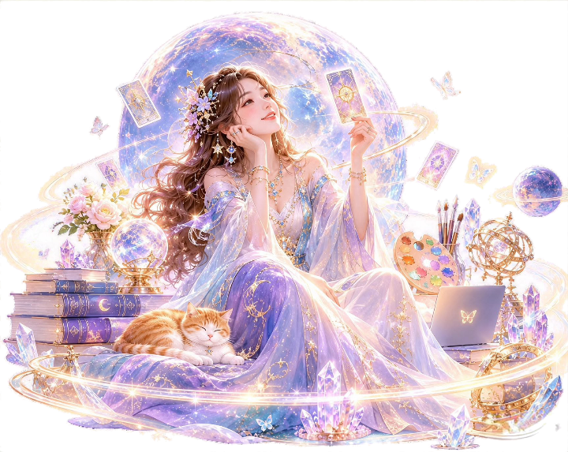
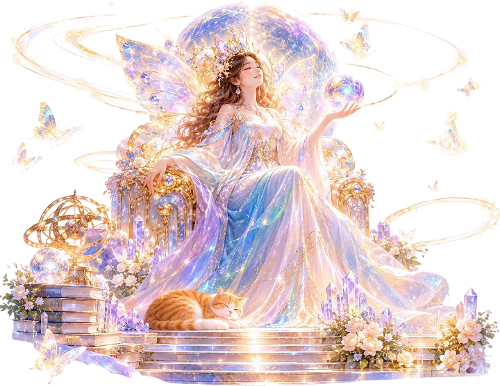
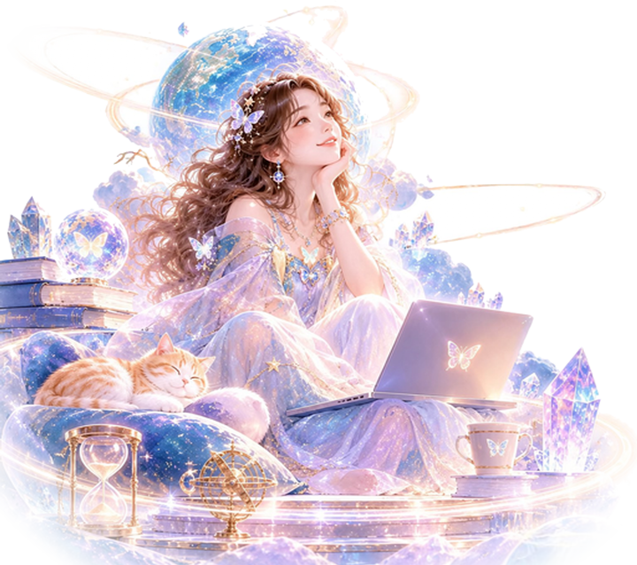
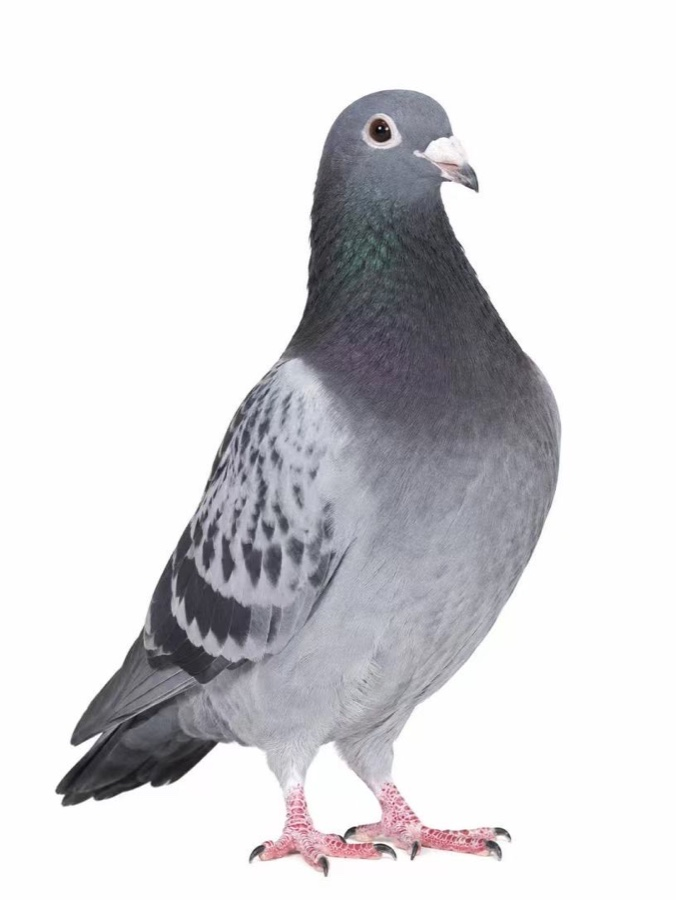
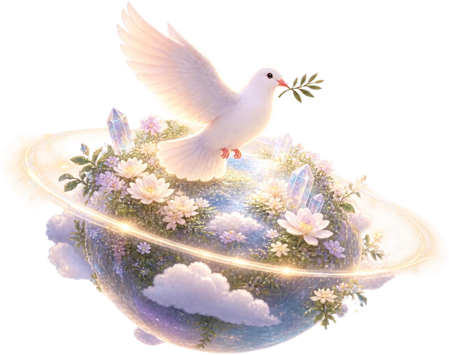
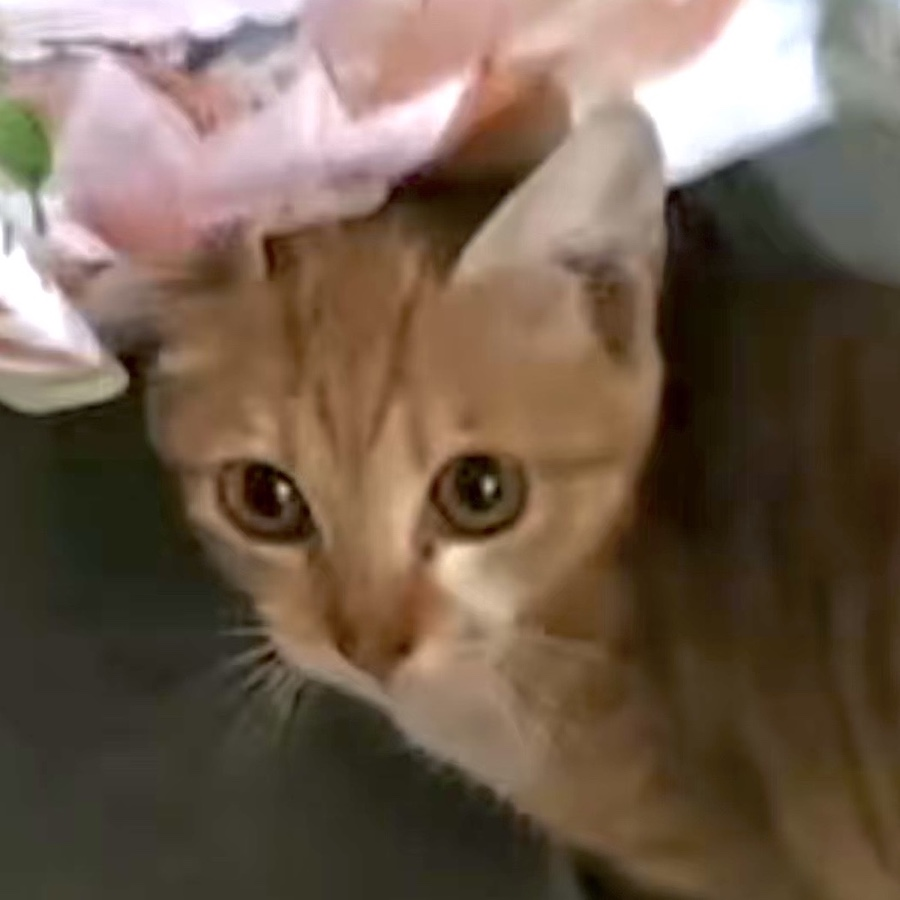
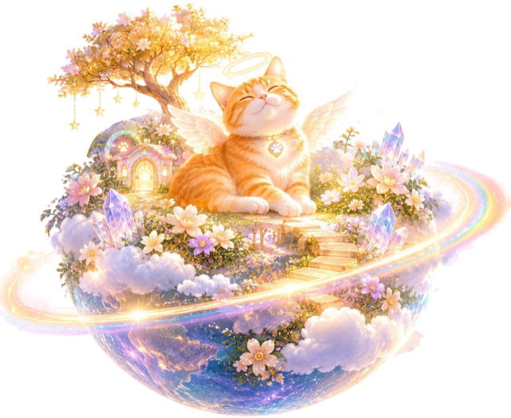

02｜泽老师
创意设计师 · 塔罗导师 · 解读者 · 疗愈师 · 折衷主义女巫
泽老师是光源宇宙里的创意与智慧担当！
既有12年塔罗领域的专业知识，也拥有丰富的牌卡解读与疗愈实践经验，累计案例2w，同时还是一位设计创作者与创新研究者。
能够在不同领域之间自由切换：上一秒还在研究塔罗牌的象征意义，下一秒可能已经开始构思一件设计作品，或者探索新的科技创意。
是一位兼具艺术审美、专业知识与创新思维的跨领域探索者。

欢迎来到小蝴蝶的光源宇宙！
这里不只有疗愈与知识，还有创意、科技、艺术、生活，以及许多尚未被发现的新世界。🦋
宇宙主理人 · 星球创造者 · 探索发起人
这是光源宇宙的创建者，也是整个宇宙的灵感来源。
喜欢探索各种有趣的知识，研究不同的疗愈方式，收集生活中的灵感，再把它们变成课程、文章、作品和各种奇妙的创意。
从潜意识、心理学、塔罗、灵气到希塔疗愈，从个人成长到宇宙探索，都是小蝴蝶感兴趣的领域。
最大的爱好就是不断学习、不断创造，偶尔还会突然冒出一个新想法，然后——宇宙又多了一颗新星球！

创意设计师 · 塔罗导师 · 解读者 · 疗愈师 · 折衷主义女巫
泽老师是光源宇宙里的创意与智慧担当！
既有12年塔罗领域的专业知识，也拥有丰富的牌卡解读与疗愈实践经验，累计案例2w，同时还是一位设计创作者与创新研究者。
能够在不同领域之间自由切换：上一秒还在研究塔罗牌的象征意义，下一秒可能已经开始构思一件设计作品，或者探索新的科技创意。
是一位兼具艺术审美、专业知识与创新思维的跨领域探索者。

数据整理官 · 疗愈师 · 解读者 · 宇宙助理
如果说光源宇宙是一座庞大的知识星系，那么Quinn就是负责整理星际信息的重要成员！
擅长信息整理、资料归纳、知识分类与内容管理，同时也参与疗愈和解读相关的探索工作。
无论是课程资料、知识档案，还是各种星球之间的信息连接，都需要一位细心的整理官。
让复杂的信息变得清晰，让零散的灵感找到自己的位置。是光源宇宙里不可缺少的智慧辅助成员！
此外Quinn从小学习古筝演奏，并且通过中艺星光杯全国比赛金奖，感受音乐中的律动能量，感受疗愈心灵深处的力量。


宇宙特别居民 · 羽毛星球代表 · 自由探索者
这位可不是普通的宇宙成员！
石林宝宝是一只鸽子，也是光源宇宙里特别的羽毛居民。
不需要学习复杂的知识，也不需要参加任何会议，只需要负责可爱、自由、偶尔巡视宇宙，以及用自己的方式参与大家的日常生活。
有时候安静地待着，有时候突然展翅，有时候又会带来意想不到的小惊喜。
在这个充满知识、创意与探索的宇宙里，石林宝宝代表着自然、陪伴与生命本身的美好。
石林宝宝代表自由、陪伴与生命的灵动


橘猫星球居民 · 生命之爱传递者 · 永恒的宇宙成员
欢迎来到光源宇宙，麒麟宝宝！
它是一只可爱的橘猫，曾经生活在我们的物质世界，用自己的方式陪伴着我们。虽然它已经离开了物质世界，但它始终是光源宇宙的一员，从未从我们的故事中缺席。
麒麟宝宝所代表的，是生命中那些温柔而珍贵的经历。它让我们明白，陪伴不一定要永远停留在同一个空间，离别也不意味着爱与连接就此结束。
我们可以允许自己悲伤，允许情绪自然流动，也可以在想念的时候微笑，在回忆的时候感受到温暖。
曾经一起度过的时光，是生命送给我们的礼物。那些陪伴、快乐、依赖与爱，都已经成为生命经历的一部分。
不要因为害怕离别，就忘记享受当下的美好；也不要因为经历了离别，就让悲伤成为往后生活的全部。
我们可以继续好好生活，继续感受快乐，继续拥抱新的美好，同时也永远珍藏那些曾经陪伴过我们的生命。
物质世界的相遇是一段珍贵的经历，而爱所留下的意义，可以一直存在于我们的记忆与心中。
麒麟宝宝则代表爱、记忆、接纳与告别

深耕塔罗领域8年，已完成塔罗解读师、导师认证，以及塔罗疗愈师导师认证，拥有丰富的个案解读与实践经验。曾担任塔罗心理学班级助教，服务500余名学员。导师为塔罗疗愈心理学督导，持续学习塔罗象征体系、心理学与自我探索的结合应用。
学习灵气5年，已完成18种灵气体系的疗愈师及导师学习认证，拥有课程教学与实践经验。曾独立开设灵气课程，并自主研发灵气课程内容，持续探索不同灵气体系在身心放松、内在觉察与个人成长中的应用。华人灵气研究协会认证联盟会员。
学习及实践SRT潜意识重整疗法5年，已完成初阶、进阶及高阶图表疗愈师认证。国际SRA认证SRT灵性治愈执行师，拥有相关技术学习与个案实践经验，致力于通过系统化的图表工具与探索流程，帮助人们梳理潜意识信息与内在议题。
学习希塔疗愈4年，已完成希塔疗愈科学认证导师及多项官方选修课程认证。
多年担任希塔疗愈官方导师班助教，并参与官方导师课程及安老师线下课程的协办与教学支持工作。
目前开设希塔疗愈认证课程、主题讲座、公益分享、课程练习会及一对一个案服务，持续投入希塔疗愈教学、学员陪伴与实践交流。
学习，是不断拓展认知的过程；教学，是将知识转化为经验与陪伴的过程。
小蝴蝶持续探索心理学、潜意识、身心灵疗法与个人成长领域，希望将不同体系的知识、技法与实践经验融合起来，创造更多有温度、有深度的学习与探索空间。